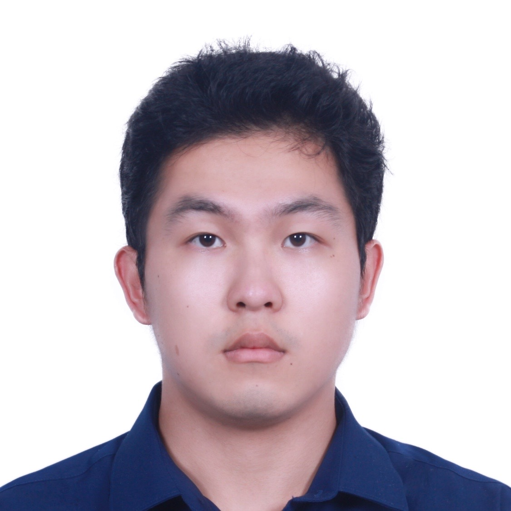

01 — ARCHITECTURE
混合时空
加速架构
以空间架构的吞吐和时间架构的复用，应对 LLM Prefill / Decode 的不同计算模式。
Terafly · LoopLynxPhD researcher · Sun Yat-sen University
我是郑佳宁，专注于大语言模型推理系统、稀疏注意力与 FPGA 加速器设计，探索从算法到硬件的高效协同。

JIANING01 / RESEARCH
01 — ARCHITECTURE
以空间架构的吞吐和时间架构的复用，应对 LLM Prefill / Decode 的不同计算模式。
Terafly · LoopLynx02 — ATTENTION
从 1M Token 长上下文到 CPU–GPU 协同，让 KV Cache 不再受限于单一存储层。
RheoAttention · RheoServe03 — EFFICIENCY
面向端侧小语言模型，探索任意 N:64 稀疏模式与高效 GPU Kernel。
RheoSparse02 / SELECTED WORKS